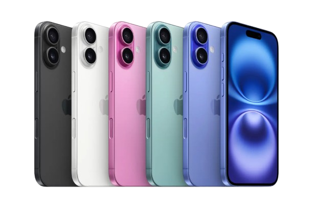
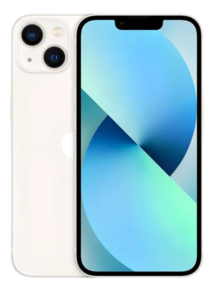
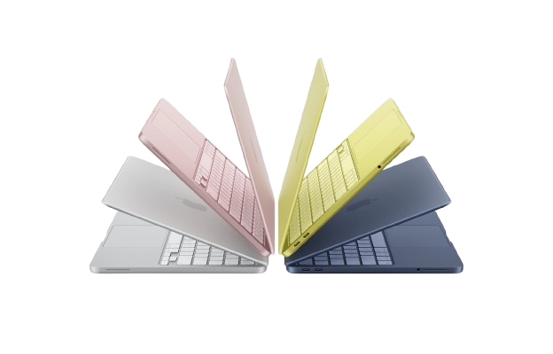
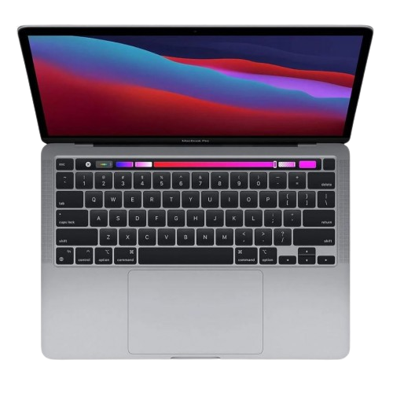
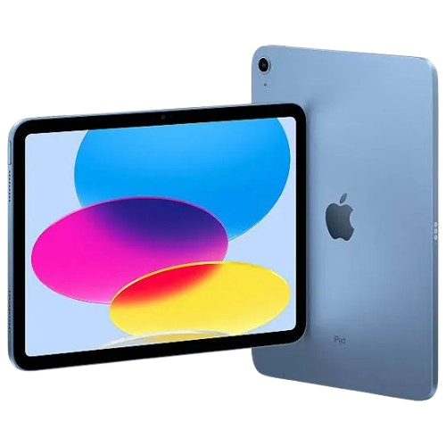

Assistência especializada para iPhone, MacBook, iPad e Apple Watch.





Fundada em 1991, a Officina Eletrônica iniciou suas atividades no mercado Apple, prestando serviços como Assistência Técnica Autorizada.